Task 9 - Application Aware Routing
In this task, you will be applying application based traffic policy. The policy will be applied to DC, BR1 and BR2 sites.
CLI policy is already configured on AppVPN based on following parameters
| SLA Class | Lantency | loss | Jitter | Link used during Congestion |
|---|---|---|---|---|
| Best Effort | 200 | 20 | Both (mpls and private1) | |
| Critical Data | 80 | 5 | 5 | private1 |
| VoiceSLA | 50 | 2 | 5 | private1 |
| Voice/Video | 50 | 2 | 1 | private1 |
Step 1: Open vManage
- Click Configuration>Policy
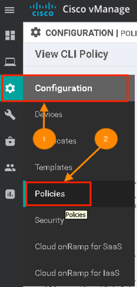
-
On the upper right hand side click Custom Option, under Centralized Policy select CLI Policy
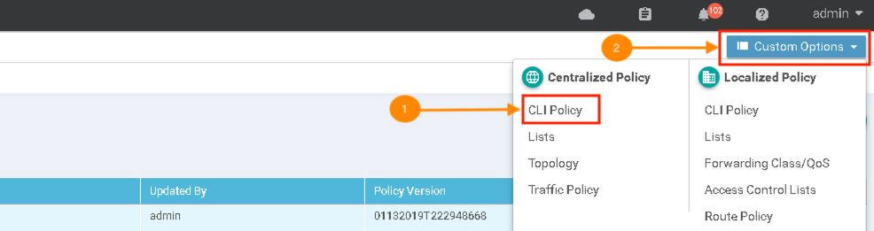
-
Click Add Policy
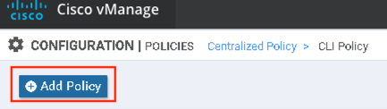
-
Enter name of the Policy, description and click Select File
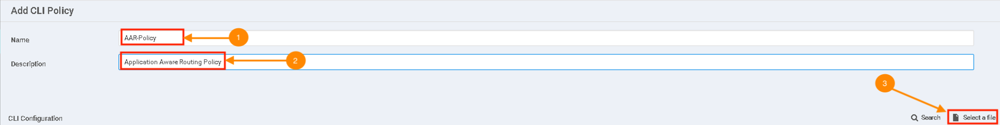
-
Under Desktop>Policy folder select file name AAR.txt
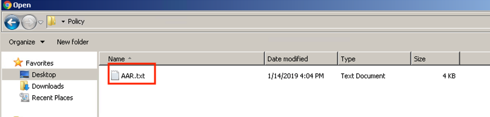
-
Click Add
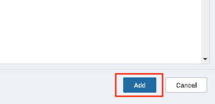
-
Once the policy is added it will be available for activation.
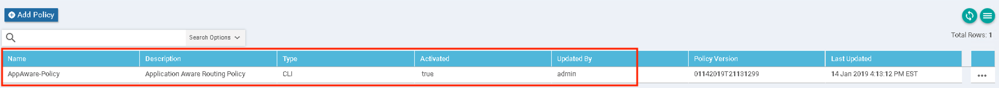
- Click ... and select Activate
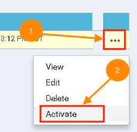
- Click Activate again
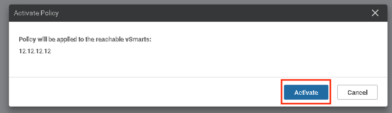
- Policy Activation Process will start and you will see Success Status
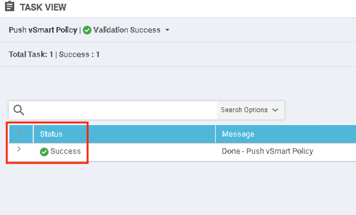
Step 2: Policy Verification
- Log into BR2-vEdge and check if policy is applied. Issue the following command.
show policy from-vsmart
You will see the following output
BR2-vEdge# show policy from-vsmart
from-vsmart sla-class BestEffort
loss 20
latency 200
from-vsmart sla-class CriticalData
loss 5
latency 80
jitter 5
from-vsmart sla-class VoiceSLA
loss 2
latency 50
jitter 5
from-vsmart sla-class VoiceVideoSLA
loss 1
latency 50
jitter 2
from-vsmart data-policy Data-Policy
direction from-service
from-vsmart app-route-policy _AppVPN_AppRoutePolicyVPN10
vpn-list AppVPN
sequence 1
match
dscp 46
action
sla-class VoiceSLA
no sla-class strict
sla-class preferred-color mpls
sequence 11
match
dscp 24
action
sla-class CriticalData
no sla-class strict
sla-class preferred-color mpls
sequence 21
match
dscp 0
action
sla-class BestEffort
no sla-class strict
sla-class preferred-color private1
sequence 31
match
app-list Lync
action
sla-class VoiceSLA
no sla-class strict
sla-class preferred-color mpls
sequence 41
match
app-list Office365
action
sla-class CriticalData
no sla-class strict
sla-class preferred-color mpls
sequence 51
match
app-list YouTube
action
sla-class VoiceVideoSLA
no sla-class strict
sla-class preferred-color private1
sequence 61
match
app-list HTTPS
dscp 46
action
sla-class BestEffort
no sla-class strict
sla-class preferred-color private1
default-action sla-class BestEffort
from-vsmart lists vpn-list AppVPN
vpn 10
from-vsmart lists app-list HTTPS
app-family web
app-family webmail
from-vsmart lists app-list Lync
app lync
from-vsmart lists app-list Office365
app office365
from-vsmart lists app-list YouTube
app youtube_hd
- Under normal conditions, both BR2-vEdge is using both interfaces to send traffic as show in the output.
show app-route stats
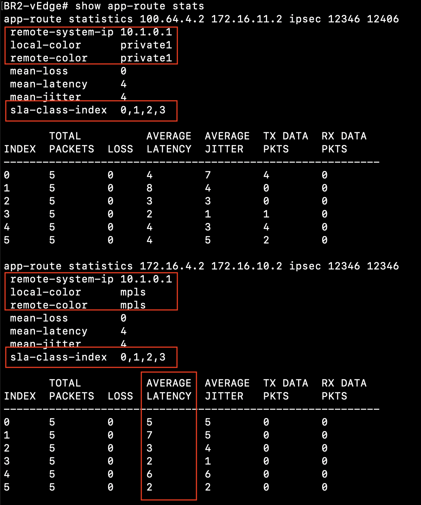
-
Lets inject delay using traffic generator on BR2-vEdge Internet (color private1) link.
-
Open a new Browser tab and on the bookmark toolbar click WANem.
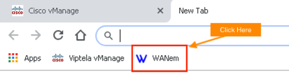
-
Click Basic Mode
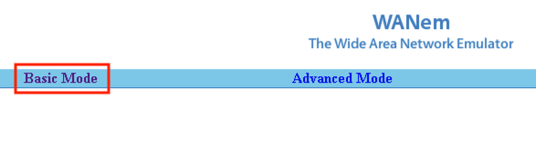
-
Under Bridges ensure br1 is selected. Under Interface eth2 enter delay 300 and Apply settings
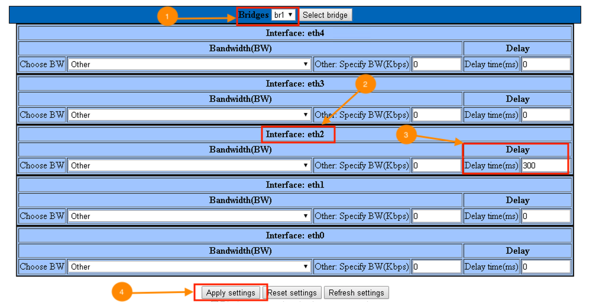
-
Lets verify the policy out again on BR2-vEdge by using command
show app-route stats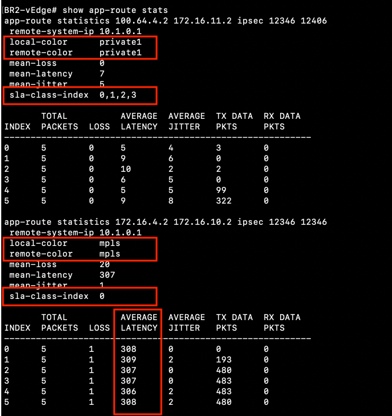
From the output above you can all traffic matching to sla-class-index moved to link color private1
Only traffic matching sla-class-index "0" is on both links.